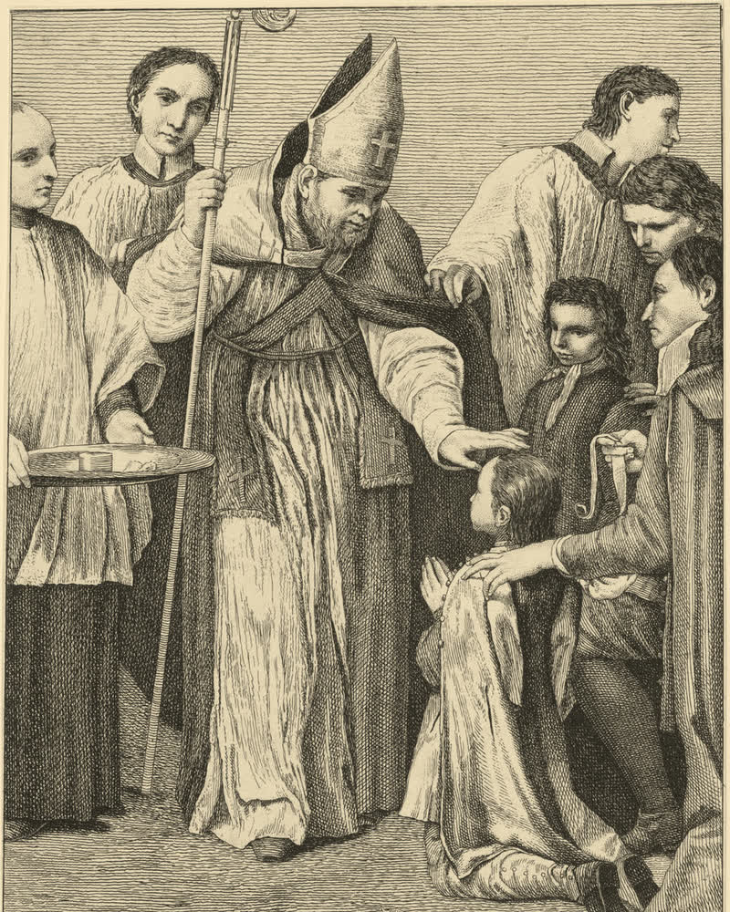

Confirmació

Confirmació
Confirmar la fe
La Confirmació completa la gràcia del Baptisme. Se celebra cada tres anys i la catequesi prepara els adolescents a partir dels 14 anys.
- QuanCada tres anys
- EdatA partir dels 14 anys, amb catequesi prèvia
Sagraments
Altres sagraments
Som aquí per ajudar-te
Tens alguna pregunta?
Escriu-nos o passa pel despatx parroquial: els divendres a la tarda, i abans o després de cada missa.